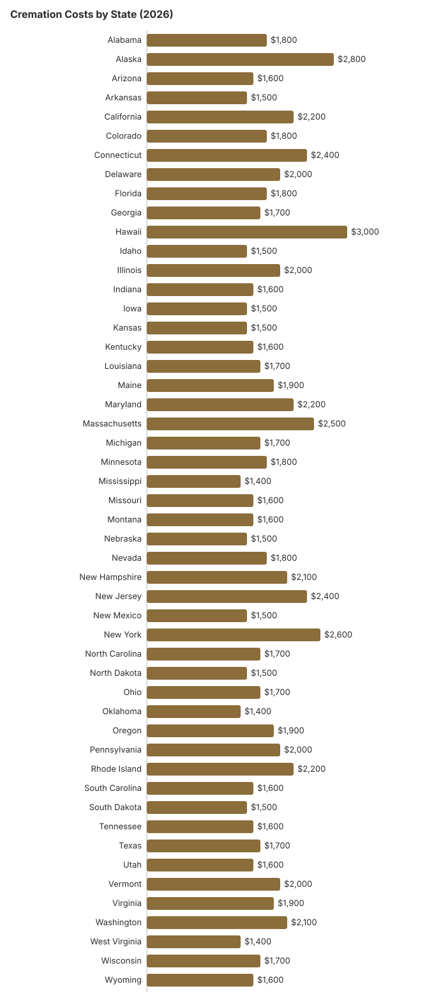

Cremation Costs by State: 2026 Price Comparison
Cremation has become the most popular disposition choice in the United States: NFDA’s 2025 Cremation & Burial Report projected a 63.4% national cremation rate for 2025. Costs vary significantly by state. In the table below, direct cremation starts around $1,400 in Mississippi, Oklahoma, and West Virginia, reaches $2,400 to $2,600 in Connecticut, New Jersey, Massachusetts, and New York, and tops out near $3,000 in Hawaii. This guide compares cremation costs across all 50 states to help you understand what to expect in your area.
How much cremation costs: across the 50 states in our table, the middle estimate for a direct cremation is $1,700, and a cremation with a funeral service runs a middle $5,800. Direct cremation is cheapest in Mississippi, Oklahoma and West Virginia (about $1,400) and most expensive in Hawaii (about $3,000). For a national benchmark, NFDA’s 2023 General Price List Study puts the median direct cremation at $2,645 when the family supplies the container. Prices for a specific provider come from its General Price List, which the FTC Funeral Rule lets you request by phone.
Browse All 50 States
Click any state below for a detailed cremation cost guide including types, pricing breakdowns, regulations, and consumer rights.
State-by-State Cremation Cost Table
The table below shows average cremation costs for all 50 states, including direct cremation (the most affordable option), cremation with a full funeral service, and the state's cremation rate. Click any state for detailed pricing.
| State | Direct Cremation | Cremation w/ Service | Cremation Rate |
|---|---|---|---|
| Alabama | $1,800 | $5,200 | 38% |
| Alaska | $2,800 | $7,200 | 72% |
| Arizona | $1,600 | $5,800 | 68% |
| Arkansas | $1,500 | $5,000 | 42% |
| California | $2,200 | $7,800 | 65% |
| Colorado | $1,800 | $6,200 | 72% |
| Connecticut | $2,400 | $7,600 | 52% |
| Delaware | $2,000 | $6,800 | 55% |
| Florida | $1,800 | $6,200 | 62% |
| Georgia | $1,700 | $5,600 | 45% |
| Hawaii | $3,000 | $8,200 | 70% |
| Idaho | $1,500 | $5,400 | 65% |
| Illinois | $2,000 | $6,600 | 52% |
| Indiana | $1,600 | $5,600 | 48% |
| Iowa | $1,500 | $5,400 | 50% |
| Kansas | $1,500 | $5,300 | 50% |
| Kentucky | $1,600 | $5,200 | 40% |
| Louisiana | $1,700 | $5,400 | 35% |
| Maine | $1,900 | $6,400 | 75% |
| Maryland | $2,200 | $7,000 | 55% |
| Massachusetts | $2,500 | $7,800 | 58% |
| Michigan | $1,700 | $5,800 | 58% |
| Minnesota | $1,800 | $6,000 | 62% |
| Mississippi | $1,400 | $4,800 | 28% |
| Missouri | $1,600 | $5,500 | 52% |
| Montana | $1,600 | $5,600 | 72% |
| Nebraska | $1,500 | $5,300 | 50% |
| Nevada | $1,800 | $6,200 | 72% |
| New Hampshire | $2,100 | $6,800 | 72% |
| New Jersey | $2,400 | $7,600 | 48% |
| New Mexico | $1,500 | $5,200 | 65% |
| New York | $2,600 | $8,000 | 55% |
| North Carolina | $1,700 | $5,600 | 48% |
| North Dakota | $1,500 | $5,300 | 55% |
| Ohio | $1,700 | $5,600 | 55% |
| Oklahoma | $1,400 | $5,000 | 45% |
| Oregon | $1,900 | $6,400 | 78% |
| Pennsylvania | $2,000 | $6,600 | 52% |
| Rhode Island | $2,200 | $7,000 | 58% |
| South Carolina | $1,600 | $5,400 | 45% |
| South Dakota | $1,500 | $5,200 | 52% |
| Tennessee | $1,600 | $5,400 | 42% |
| Texas | $1,700 | $5,800 | 48% |
| Utah | $1,600 | $5,600 | 42% |
| Vermont | $2,000 | $6,600 | 72% |
| Virginia | $1,900 | $6,400 | 50% |
| Washington | $2,100 | $6,800 | 76% |
| West Virginia | $1,400 | $5,000 | 48% |
| Wisconsin | $1,700 | $5,800 | 58% |
| Wyoming | $1,600 | $5,600 | 65% |

Cremation Waiting Periods and Regulators by State
Price is only half of planning a cremation; the other half is timing. 8 states (Connecticut, Florida, Indiana, Maine, Massachusetts, New Hampshire, Texas and Wisconsin) make families wait 48 hours after death, 12 set a 24-hour minimum, and Maryland uses 12 hours. The other 29 set no fixed wait, but that rarely means same-day cremation: a coroner, medical examiner or local registrar still has to issue a permit, and the next of kin or authorized agent has to sign. Some of the timed states let a medical examiner or court waive the wait, so the citation in each row is the place to check.
The last column names the state office that licenses funeral homes and crematories. It is the right place to confirm a provider’s license or to file a complaint about pricing.
| State | Minimum wait | Law | Regulator |
|---|---|---|---|
| Alabama | 24 hours | Ala. Code § 34-13-121 | Alabama Board of Funeral Services 334-242-4049 |
| Alaska | None set; permit still needed | AS 13.75.020 | Alaska Division of Corporations, Business and Professional Licensing (mortuary science program) 907-465-2250 |
| Arizona | None set; permit still needed | A.R.S. § 32-1365.02 | Arizona Department of Health Services, Bureau of Licensing for Professions & Occupations (BLPO) 602-364-2079 |
| Arkansas | None set; permit still needed | 17 CAR § 30-205 | Arkansas Insurance Department, Funeral Services Division 501-682-0574 |
| California | None set; permit still needed | Health & Safety Code § 103050 | California Cemetery and Funeral Bureau 916-574-7870 |
| Colorado | None set; permit still needed | C.R.S. § 12-135-307 | Colorado Department of Regulatory Agencies 303-894-7800 |
| Connecticut | 48 hours | Conn. Gen. Stat. § 19a-323 | Connecticut Department of Public Health 860-509-7603 |
| Delaware | None set; permit still needed | 16 Del. C. § 3159 | Delaware Division of Professional Regulation 302-744-4500 |
| Florida | 48 hours | Fla. Stat. § 872.03; Fla. Stat. § 406.11(1)(c) | Florida Department of Financial Services 850-413-3039 |
| Georgia | None set; permit still needed | O.C.G.A. § 31-10-20; Ga. Comp. R. & Regs. r. 511-1-3-.23 | Georgia State Board of Funeral Service 404-424-9966 |
| Hawaii | None set; permit still needed | HRS §§ 338-23, 338-25 | Hawaii Department of Commerce and Consumer Affairs (DCCA) 808-586-3000 |
| Idaho | None set; permit still needed | IDAPA 24.08.01.100; Idaho Code § 39-268 | Idaho Division of Occupational and Professional Licenses 208-334-3233 |
| Illinois | 24 hours | 410 ILCS 18/35 | Illinois Department of Financial and Professional Regulation 217-524-1981 |
| Indiana | 48 hours | IC 23-14-31-36 | Indiana Professional Licensing Agency 317-234-3031 |
| Iowa | None set; permit still needed | Iowa Code § 331.805(3)(b) | Iowa Department of Inspections, Appeals, and Licensing 515-229-3939 |
| Kansas | None set; permit still needed | K.S.A. 65-1762; 65-2426a | Kansas State Board of Mortuary Arts 785-296-3980 |
| Kentucky | None set; permit still needed | KRS 213.081; KRS 213.076(7) | Kentucky Board of Embalmers and Funeral Directors 502-426-4589 |
| Louisiana | None set; permit still needed | La. R.S. 37:876-877; 13:5716 | Louisiana State Board of Embalmers and Funeral Directors 504-838-5109 |
| Maine | 48 hours | 32 M.R.S. § 1405 | Maine Board of Funeral Service 207-624-8624 |
| Maryland | 12 hours | Md. Health-Gen. § 5-503 | Maryland Department of Health 410-764-4792 |
| Massachusetts | 48 hours | M.G.L. ch. 114, § 44 | Massachusetts Board of Embalming and Funeral Directing 617-701-8628 |
| Michigan | None set; permit still needed | Mich. Comp. Laws § 333.2848 | Michigan Department of Licensing and Regulatory Affairs 517-241-9221 |
| Minnesota | None set; permit still needed | Minn. Stat. § 149A.95, subd. 6a | Minnesota Department of Health, Health Regulation Division 651-201-4200 |
| Mississippi | None set; permit still needed | 15 Miss. Admin. Code Pt. 5, R. 4.7.2 | Mississippi State Board of Funeral Service 601-932-1973 |
| Missouri | None set; permit still needed | 20 CSR 2120-2.071; RSMo § 194.119 | Missouri State Board of Embalmers & Funeral Directors 573-751-0813 |
| Montana | 24 hours | MCA 37-19-705 | Montana Department of Labor and Industry 406-841-2359 |
| Nebraska | None set; permit still needed | Neb. Rev. Stat. 71-605 | Nebraska Board of Funeral Directing and Embalming 402-471-2117 |
| Nevada | None set; permit still needed | NRS 451.660 | Nevada Funeral and Cemetery Services Board 775-825-5535 |
| New Hampshire | 48 hours | RSA 325-A:18 | New Hampshire Office of Professional Licensure and Certification 603-271-2152 |
| New Jersey | 24 hours | N.J.S.A. 26:7-18.1 | New Jersey Division of Consumer Affairs 973-504-6425 |
| New Mexico | None set; permit still needed | NMSA 61-32-19 | New Mexico Board of Funeral Services 505-476-4622 |
| New York | None set; permit still needed | Pub. Health Law 4145; N-PCL 1517 | New York State Department of Health, Bureau of Funeral Directing 518-402-0785 |
| North Carolina | 24 hours | N.C.G.S. 90-210.129, 130A-388 | North Carolina Board of Funeral Service 919-733-9380 |
| North Dakota | None set; permit still needed | N.D.C.C. § 23-06-07 | North Dakota State Board of Funeral Service 701-776-6222 |
| Ohio | 24 hours | Ohio Rev. Code § 4717.23 | Ohio Board of Embalmers and Funeral Directors 614-466-4252 |
| Oklahoma | None set; permit still needed | 63 O.S. § 1-329.1 | Oklahoma Funeral Board 405-522-1790 |
| Oregon | None set; permit still needed | ORS 432.158 | Oregon Mortuary and Cemetery Board 971-673-1500 |
| Pennsylvania | 24 hours | 49 Pa. Code § 13.212 | Pennsylvania State Board of Funeral Directors 1-833-367-2762 |
| Rhode Island | 24 hours | R.I. Gen. Laws § 23-3-18 | Rhode Island Department of Health, Board of Funeral Directing/Embalming 401-222-4998 |
| South Carolina | 24 hours | S.C. Code § 32-8-340 | South Carolina Board of Funeral Service 803-896-4429 |
| South Dakota | 24 hours | S.D. Codified Laws § 34-26A-13.1 | South Dakota State Board of Funeral Service 605-642-1600 |
| Tennessee | None set; permit still needed | Tenn. Code Ann. 62-5-504 | Tennessee Board of Funeral Directors and Embalmers 615-741-5062 |
| Texas | 48 hours | Tex. Health & Safety Code 716.004 | Texas Funeral Service Commission 512-936-2474 |
| Utah | None set; permit still needed | Utah Code 58-9-610, 26B-8-230 | Utah Board of Funeral Service 801-530-6621 |
| Vermont | 24 hours | 18 V.S.A. 5201 | Vermont Office of Professional Regulation 802-828-1188 |
| Virginia | None set; permit still needed | Va. Code 54.1-2818.1 | Virginia Board of Funeral Directors and Embalmers 804-367-4479 |
| Washington | None set; permit still needed | RCW 70.58A.210 | Washington State Department of Licensing 360-664-1555 |
| West Virginia | None set; permit still needed | W. Va. Code 30-6-21 | West Virginia Board of Funeral Service Examiners 304-558-0302 |
| Wisconsin | 48 hours | Wis. Stat. 979.10 | Wisconsin Department of Safety and Professional Services 608-266-2112 |
| Wyoming | 24 hours | 035-4 Wyo. Code R. 4-5 | Wyoming State Board of Funeral Service Practitioners 307-777-5403 |
Citations as published on each state’s cremation page on this site; a waiver, an infectious-disease case or a medical examiner hold can change the timing. Compiled from those state pages in October 2026.
Where Readers Start With Cremation
These are the cremation guides readers open most often, a good place to start if you are weighing cremation against burial or want the cheapest workable option:
- Cremation costs in Michigan
- What direct cremation costs
- Cremation vs. burial cost
- Cremation vs. burial calculator
Understanding Cremation Costs
Cremation costs are driven by the same factors that affect all funeral pricing: cost of living, local competition, state regulations, and the specific services chosen. Direct cremation, where the body is cremated without a viewing or ceremony, is always the most affordable option. Adding a memorial service, urn upgrade, or scattering service will increase the total cost.
Regardless of which state you are in, the FTC Funeral Rule protects your right to choose only the services you want and to receive itemized pricing from any provider. You are never required to purchase a casket for cremation; a simple alternative container is sufficient.
Frequently Asked Questions
What is the average cremation cost in the US?
The NFDA 2023 General Price List Study (latest available) reports a national median of $6,280 for a funeral with viewing and cremation, and direct-cremation medians of $2,645 when the family supplies the container and $2,750 when the funeral home does. A local advertisement near $1,000 is an asking price, not that median.
Which states have the cheapest cremation?
In this guide's state table, Mississippi, Oklahoma, and West Virginia have the lowest direct-cremation estimate at about $1,400. Arkansas, Idaho, Iowa, Kansas, Nebraska, New Mexico, North Dakota, and South Dakota follow at about $1,500, so the cheapest states are spread across the South, the Plains, and the Mountain West.
Which states have the highest cremation rates?
Among the rounded state rates used on this site, Oregon (78%), Washington (76%), and Maine (75%) rank highest, followed by Alaska, Colorado, Montana, Nevada, New Hampshire, and Vermont at 72% and Hawaii at 70%. So the leaders are mostly in the West, with northern New England close behind. All of them sit well above the 63.4% national rate NFDA projected for 2025.
Is direct cremation the cheapest funeral option?
Yes, direct cremation is generally the most affordable disposition option in every state. It includes only the essential services: transportation, the cremation itself, and return of remains to the family.
Disclaimer: These are planning estimates, not a quote or professional advice. Full disclaimer.